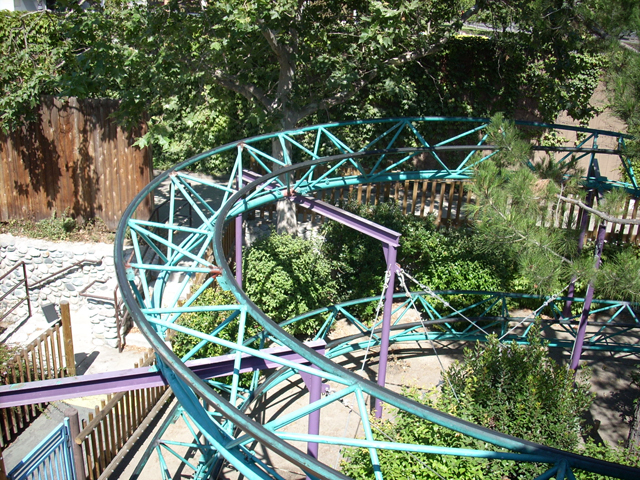
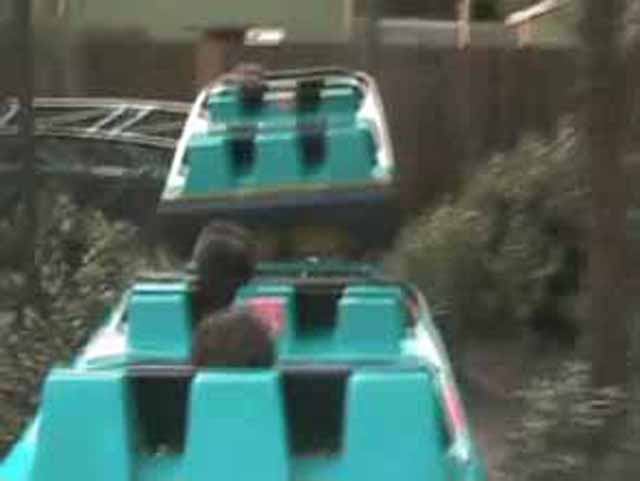
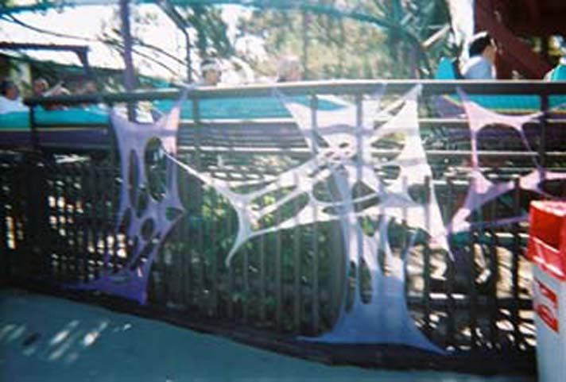

| |

Timberline Twister Review

For today's review, we're going back in time to 2008, which was when I was last short enough to ride their kiddy coaster, Timberline Twister. After you barley squeezed in the cars, you climbed up the lift hill. As you turned around you went down the first drop. You got some nice airtime on the first drop (for a kiddy coaster). Then you got up into an airtime hill. Then you went up into a turnaround, where you got some more kiddy airtime. After another turnaround, you headed straight into the kiddy bunny hops. After the kiddy bunny hops, you turned right into the station. For a kiddy coaster, this was a pretty fun ride. It's a coaster that makes me want to at some point, make that hypothetical Top 10 Kiddy Coasters List. But hey. They're planning on replacing Timberline Twister with another kiddy coaster. Hopefully I'll be able to snag that credit.
4/10
Location: Knotts Berry Farm
Opened: 1983
Died: 2023
Built by: Bradley and Kaye
Last Ridden: March 31, 2008
Timberline Twister Photos





Home
|